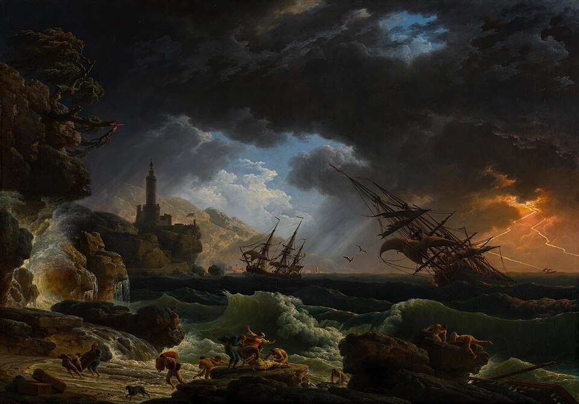

Пролог
Сейчас мы приближаемся к точке, в которой привычная реальность утрачивает твёрдую структуру, а привычные каноны уверенно дрейфуют в область иллюзии. Внешне может казаться, что мир наполнен беспрецедентным избытком: в каждом аспекте бытия — от информационных потоков до множества псевдо-возможностей — мы встречаем обилие форм и инструментов. Однако за этим поверхностным великолепием скрывается всё более явное истощение глубинного смысла. Подобно перезрелой плодовой мякоти, наш социум уже не столько цветёт, сколько начинает быстро разлагаться, хотя и сохранил внешние приметы благополучия.
Эта ситуация напоминает последнее затишье перед обрушением: люди по-прежнему могут действовать, общаться, обмениваться услугами и деньгами, но их душевная энергия и доверие к структурам почти исчерпаны. Именно так проявляется предощущение обрушения — глобального события, которое не обязательно будет сопровождаться внешним громом или военным кризисом; скорее, оно придёт как внутренняя утрата фундамента, на котором мы стояли.
Вместе с этим обрушением идёт и распыление смыслов: противоречивые концепции и учения свободно тиражируются во множестве платформ, исчезает простое различение между подлинным знанием и его нескончаемыми симулякрами. Общий результат — парадоксальное состояние: люди словно получили доступ ко всем ключам, но ключи эти зачастую не подходят ни к одной настоящей двери.
Краткая историческая ретроспектива «вертикали»
На протяжении веков человечество придерживалось иерархического миропонимания: все смыслы и ресурсы стекались сверху вниз. Ценности формировались в вертикальных структурах — от монархий и религиозных институтов до крупных корпораций и централизованных государств. В этом порядке сохранялась понятная логика «от высшей инстанции к исполнителям», и сама идея «восхождения к центру власти» мотивировала поколения людей.
В такой вертикали существовал эффект закрытости: элита контролировала доступ к сакральному знанию, ресурсам и технологиям; массы, находясь у подножия, могли лишь догадываться о тонком механизме принятия решений и стратегиях, лежащих за видимыми фасадами. Но при всех недостатках и жестком конформизме вертикаль предоставляла стержень смысла: был задан определённый путь наверх, была узнаваемая цель, обозначенная высшими идеалами, образами и догматами.
Сегодня эта вертикаль трещит по швам: процесс глобализации и цифровизации прорвал плотину монопольного владения информацией. Всё то, что было «высшим уровнем», начало доступаться простому человеку — порой в извращённом и обесцененном виде.
Парадокс массового «доступа» и скрытой закрытости
На первый взгляд, современная цивилизация повсеместно пропагандирует идею открытости: социальные сети и блоги, платные и бесплатные курсы, стрим-платформы и открытые базы данных, — всё это создаёт впечатление, что любой желающий может «достучаться» до корней мудрости. Более того, само понятие «эксклюзивности» теперь старательно позиционируется как пережиток, что призвано внушить массам уверенность в том, что эпоха закрытых ворот осталась в прошлом.
Однако истинная картинка гораздо более противоречива. Это не расцвет свободы, а новая форма закрытости, лишь тонко закамуфлированная. Подобно тому, как поток низкокачественной информации скрывает крупицы реального знания, массированная раздача «доступа» делает непрозрачным, где заканчивается фасад и начинается суть. Система, распыляя на всех иллюзию участия, тем самым добивается умножения шума, в котором теряются действительно ценные тропы.
В конечном итоге подлинное знание опять оказывается окружено лабиринтом второсортных материалов и бесконечных копий. Хотя формально это выглядит как «массовая открытость», фактически мы видим возникновение парадокса: чем громче объявляют, что теперь всё доступно, тем сложнее отыскать настоящее зерно под лаковым покрытием тысяч его подделок.
Иллюзия ключей: как многократная раздача обесценивает саму дверь
Прежняя логика, в которой человек обретал один драгоценный ключ и с его помощью открывал заветную дверь, сегодня претерпела глубинную мутацию. Теперь ключи массово раздают на каждом углу — словно рекламные буклеты. Все говорят о «путях к успеху», «секретах победы», «высших стратегиях», а любой «гуру» охотно делится методичками и схемами.
Но когда ключей становится слишком много, сами двери теряют свою исключительность. Более того, никто не может поручиться, что в бесчисленном потоке отмычек и поломанных дубликатов вообще встретится действительно рабочий инструмент. В результате человек склонен перемещаться от одной дверной скважины к другой, проверяя, какой ключ подойдёт, но не находя реального входа.
Этот процесс порождает не созидание, а дезориентацию: массовая раздача «ключей» приманивает людей обещанием быстрого прорыва, но оборачивается рассеянием внимания и утратой чёткого фокуса на подлинном знании. Реальная дверь — если таковая существует — скрывается за пёстрым нагромождением ложных вариантов.
Так и возникает иллюзия доступа: впечатление, что всякому доступны тайны, ранее находившиеся под суровым запретом. Но подспудно, почти незаметно, исчезает сам объект стремления — вход в сакральный центр, ибо в избыточном потоке ключей нельзя распознать, где подлинный замок и чего он требует от ищущего.
Когда всё кругом вроде бы «открыто», становится непонятно, что действительно важно и что лишь пустая декорация. И в этот исторический момент в сознании всё острее зазвучивает то самое предощущение обрушения: ведь если исчезает единство смысла, если теряется искомая дверь к глубине, то на смену монолитным вертикалям приходят зыбкие, всепоглощающие симулякры. И они разрастаются вширь до тех пор, пока не захлестнут сами основания культуры, погружая её в пучину распада.